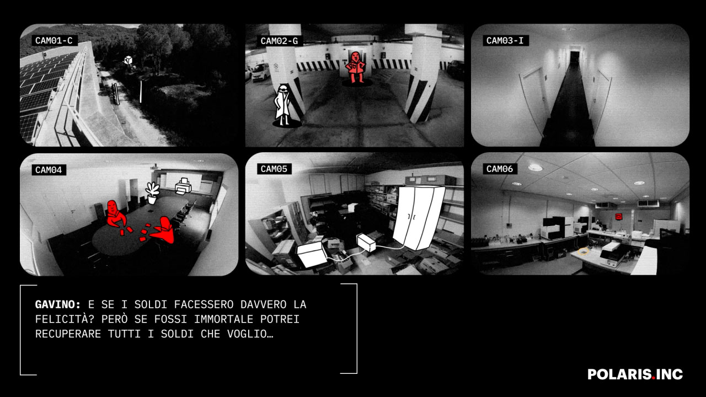
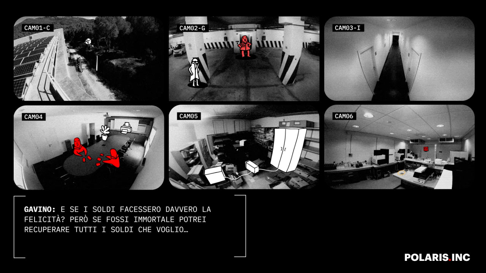

{ graphic design }
Polaris.inc
Given the task of designing a videogame set in Polaris, a scientific research center in the middle of the sardinian mountains, in one week, we created a puzzle-solver based on the use of multiple security cameras. The player can choose wether to guide thief Gavino to the building's caveau to steal precious DNA information or to jail him and save the unsuspecting guards' jobs.
My project team was Silvia Atzeni, Lorenzo Garau, Alessandro Corellas and Denise Paulis.
Designed in 2019.
 
